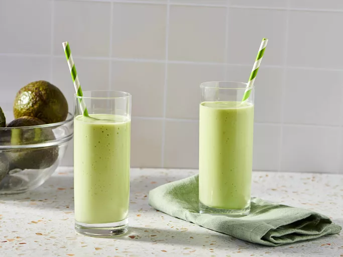

Avocado Smoothie

Avocado smoothie is a thick, creamy drink with a smooth texture that feels rich in every sip. It has a mild, slightly earthy taste that is naturally satisfying without being too sweet. The color is a soft, pale green — calm and refreshing to look at. It is the kind of drink that feels like a proper meal on its own.
Igredients
- 1 ripe avocado, halved and pitted
- 1 cup milk
- ½ cup vanilla yogurt
- 3 tablespoons honey
- 8 ice cubes
Directions
Step 1
Gather the Igredients.Step 2
Scoop avocado flesh into a blender; add milk, yogurt, honey, and ice cubes. Blendd igredients until smooth.